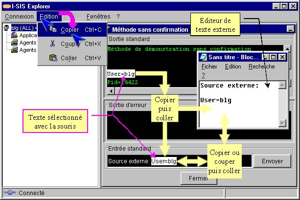

I-SIS Explorer

Guide d'utilisation
|
|
I-SIS Explorer |
|
|
Guide d'utilisation |
||
Les fonction d'édition sont copier, couper, coller. Elles sont utilisables dans toutes les zones de texte et de saisie de I-SIS Explorer. Elles sont accessibles par "Edition" de la barre de menu, ou par les classiques raccourcis de clavier [Ctrl]+[C], [Ctrl]+[X], [Ctrl]+[V].
Ouvrez une fenêtre d'exécution de méthode d'exploitation (cf. «Sous-fenêtre d'exécution de procédure»), et un éditeur de texte externe (Notepad de Windows dans l'exemple suivant),
Vous pouvez sélectionner et copier du texte dans un éditeur externe ou un des cadres suivant de la fenêtre d'exécution : "Sortie standard", "Sortie d'erreur", "Entrée standard",
Puis collez le dans le cadre "Entrée standard" ou un éditeur externe,

Vous pouvez sélectionner, copier ou couper du texte, dans le cadre "Entrée standard" ou un éditeur externe, puis le coller dans le cadre "Entrée standard" ou un éditeur externe.
| i |
Avertissement : Sous Linux, les fonctionnalités d'édition (copier, couper et coller) peuvent ne pas fonctionner correctement entre le I-SIS Explorer et une autre application. |
Copyright © 2003 BV Associates. Tous droits réservés.